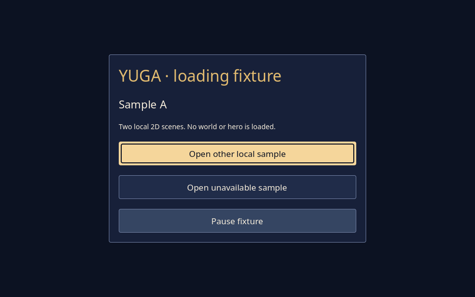
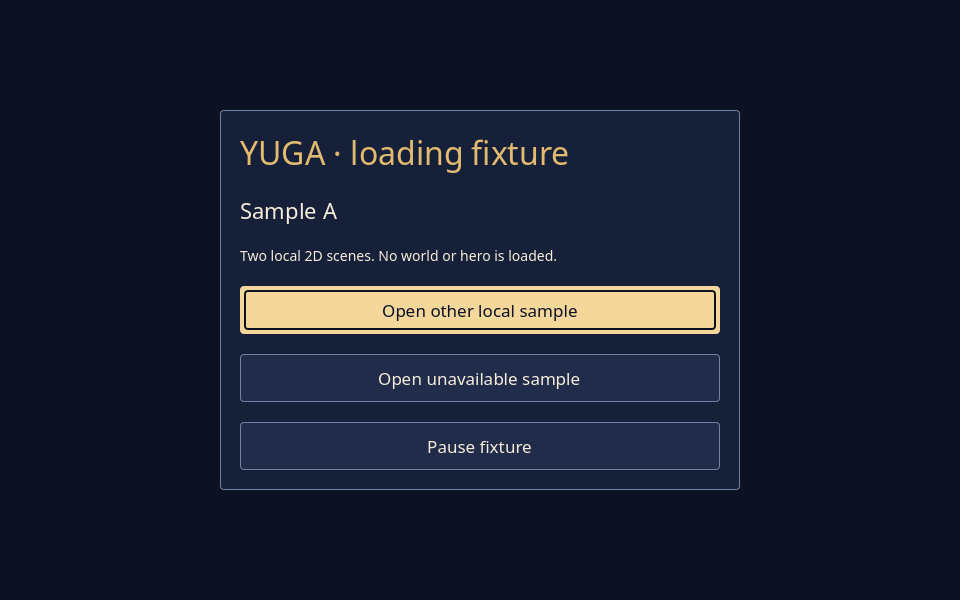
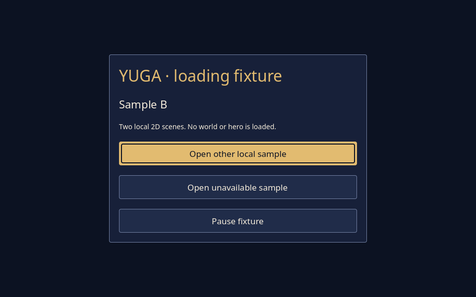
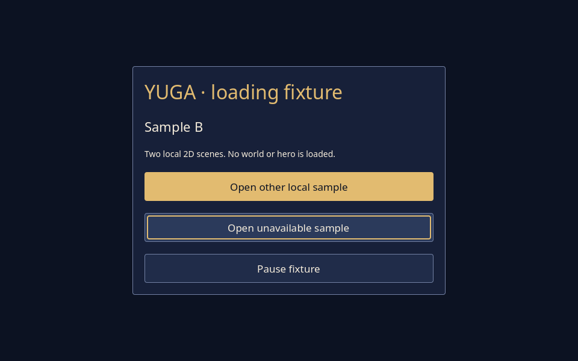

native-transition-r1
Unmodified original framebuffer PNGs. State/phase evidence is in each linked JSON.
01-local-caller.png · state 02-queued-duplicate-cancel.png · state
03-paused-cancel.png · state
02-queued-duplicate-cancel.png · state
03-paused-cancel.png · state
04-threaded-cancel.png · state
05-reentry-b.png · state
06-return-a.png · state 07-second-entry-b.png · state
07-second-entry-b.png · state 08-real-missing-error.png · state
09-keyboard-retry.png · state
08-real-missing-error.png · state
09-keyboard-retry.png · state 10-error-back-focus.png · state
10-error-back-focus.png · state
11-final-reentry.png · state auto-constructing-13.png · state
auto-constructing-13.png · state auto-constructing-7.png · state
auto-constructing-7.png · state auto-constructing-8.png · state
auto-constructing-8.png · state auto-constructing-9.png · state
auto-constructing-9.png · state auto-loading-13.png · state
auto-loading-13.png · state auto-loading-7.png · state
auto-loading-7.png · state auto-loading-8.png · state
auto-loading-9.png · state
auto-queued-10.png · state
auto-queued-11.png · state
auto-loading-8.png · state
auto-loading-9.png · state
auto-queued-10.png · state
auto-queued-11.png · state auto-queued-13.png · state
auto-queued-13.png · state auto-queued-5.png · state
auto-queued-5.png · state auto-queued-7.png · state
auto-queued-7.png · state auto-queued-8.png · state
auto-queued-9.png · state
auto-queued-8.png · state
auto-queued-9.png · state